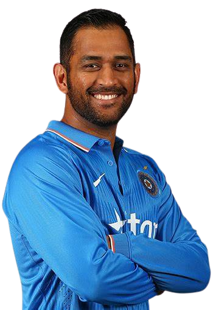

"The process is more important than the results.
And if you
take care of the process, you will get the results."

Born in Ranchi, India, on July 7, 1981, MS Dhoni's childhood passion for cricket persisted through financial challenges. He balanced work as a train ticket examiner while pursuing his cricket dreams, exemplifying his determination and dedication to the sport.
MS Dhoni is known for his calm and composed demeanor, earning him the nickname "Captain Cool". This trait was particularly evident during high-pressure situations, making him an exceptional leader on the field.
Under Dhoni's captaincy, India won the inaugural ICC T20 World Cup in 2007. This victory marked a turning point in Indian cricket and showcased Dhoni's leadership skills.
One of the most memorable moments in Indian cricket history was the 2011 ICC Cricket World Cup win. Dhoni led the team to victory, scoring the winning runs in the final and solidifying his place as a cricketing legend.
Dhoni's ability to stay calm in tense situations was legendary. He often finished matches with his signature helicopter shot, demonstrating his impeccable batting skills in crucial moments.
As a wicket-keeper, Dhoni was known for his lightning-fast stumping and safe pair of hands behind the stumps. His skills made him one of the best wicket-keepers in the world.
MS Dhoni's deep respect for the Indian Army led to his honorary rank as Lieutenant Colonel in the Territorial Army's Para Regiment. He underwent rigorous training, including a parachute jump, showcasing his dedication. Dhoni's active support for the welfare of the armed forces and their families further solidifies his role as a patriot and inspiration to many.